Software Dev Process Lecture Notes - Part 2 Lesson 2 - UML
Software Engineering and UML
Object Orientation
- Precedence of data over function
- data is the center
- Information hiding
- encapsulation of data behind interfaces
- makes code more maintainable. nobody cares how its implemented, just inputs and outputs
- Inheritance
- re-use of object definitions with incremental refinement
- polymorphism = sub-classes can be used wherever their parent classes can be used
What is an object
- Object is a computing unit organized around a collection of state or instance variables
- associated with operators that act on such state
- operations are invoked by sending a message to an object
- Class is a blueprint from which new objects can be created. Like a blueprint
Why do we use OO?
- Reduce maintenance costs by limiting the effect of chases
- Can modify parts of the system without affecting the rest of the system
- Improve development process
- Enforce good design
OOAD - OO Analysis and Design
- model a software system as a group of interacting objects
- requirements analysis technique
- Rumbaugh methodology - 3 models - OMT
- data
- functional
- control - uses state machines to describe how a system would evolve while in use
- grandfather of Unified Modeling Language (UML)
- From functional orientied to data oriented view
- define system first in terms of data types
- Focus on real world object and how they map to requirements
- obtain and prepare textual description of problem to be solved
- underline nouns -> classes
- underline adjectives -> attributes of classes
- underline active verbs -> operations
Running Example: Course Management System
Class Diagram
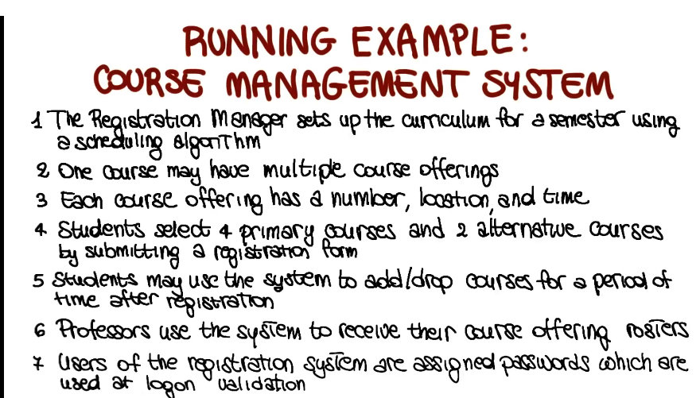
- Classes
- fairly simple, go find all the nouns, those are your classes 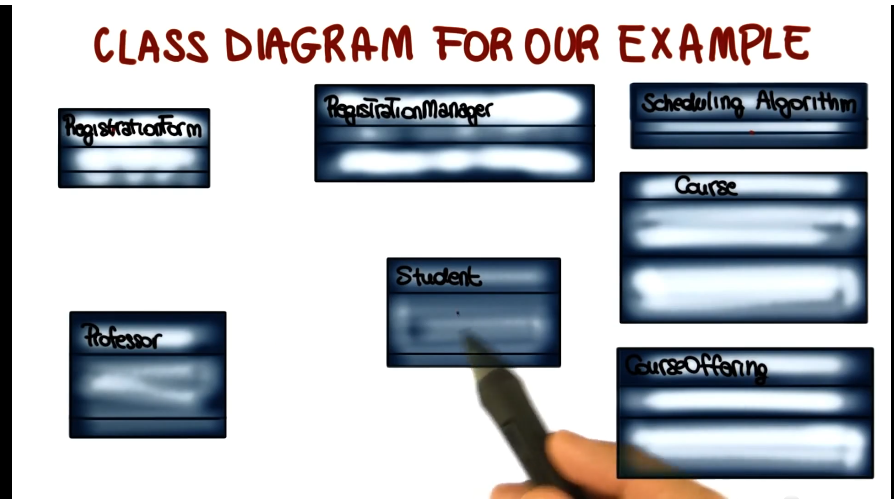
- Attributes represent the structure of a class
- May be found by:
- examining class definitions
- studying requirements
- applying domain knowledge
- e.g each course offering has a number, location, and time
- May be found by:
- Operations
- Represent the behavior of a class
- May be found by examining interations among entities
- e.g. sutdents may use the system to add/drop courses 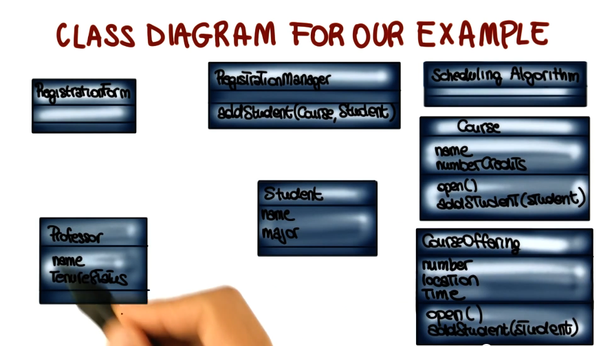
- Relationships between classes
- describe interactios between objects
- 3 main types
- dependency: x uses y
- assocations/aggregations: x has a y
- generalization: x is a y
- dependency example: 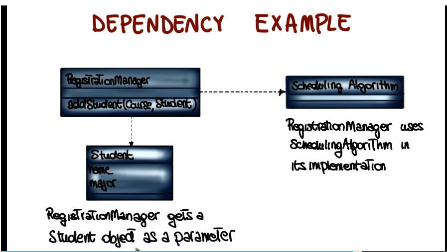
- association example
- add adornments to the diagram to explain more detail about the association. e.g. what is the relationship, what direction does it go, how many y’s can x have, etc 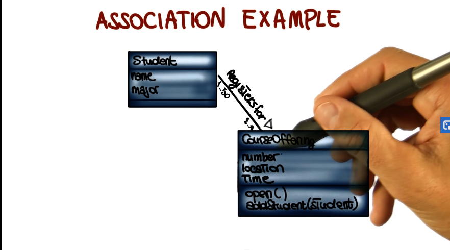
- aggregation example
- relationship between two classes where one represents a larger class (a whole) which consists of smaller ones (parts of the whole) 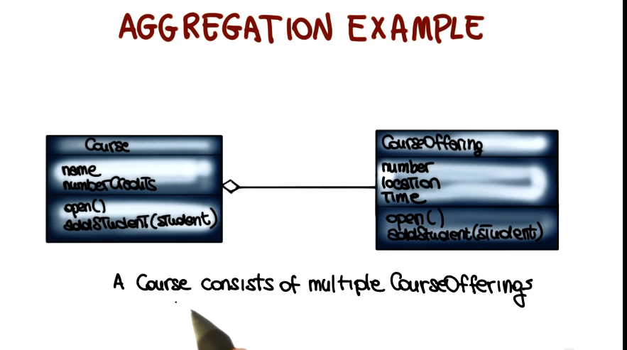
- generalization example
- relationship between a general class (superclass) and a more specific class (subclass) which refines the superclass. 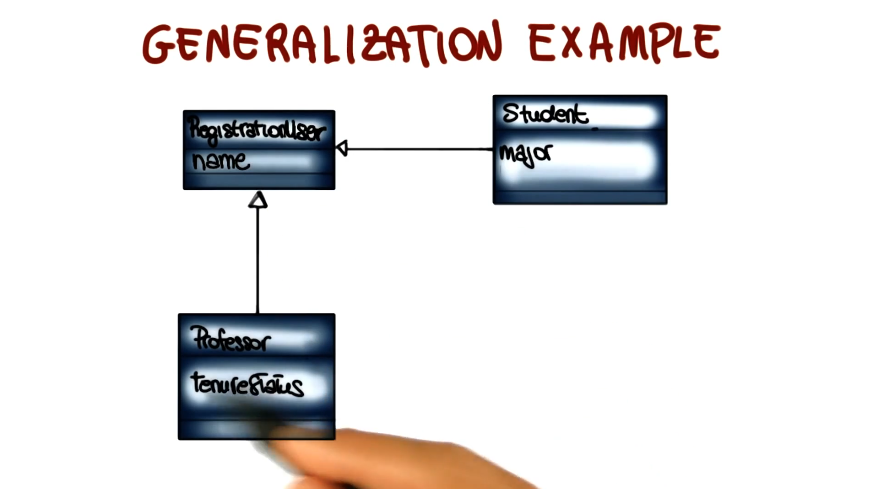
- class diagram creation tips
- take time to understand the problem
- choose good class names
- concentrate on the WHAT (remember, classes are nouns)
- start with a simple diagram, then refine it
- refine until you feel it is complete
Component Diagram
- Static view of components in the system and their relationships
- Node = component
- set of classes with a well-defined interface
- Edge = Relationship
- “uses service of”
- can be used to represent an architecture
- example:
- dashed are original UML, means ‘x uses y’
- lollipops are from UML 2, offer more detail
- indicates a provided interface
- socket indicates a required interface
- all can be annotated 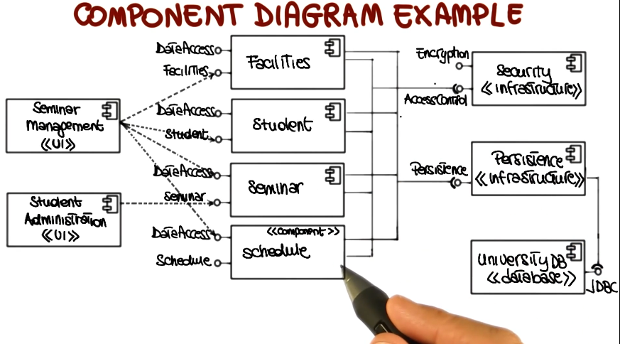
Deployment Diagram
- provides a static deployment view of a system
- physical allocation of components ot computational units (e.g. client server system)
- node = computational unit
- edge = communication between units
- deployment example: 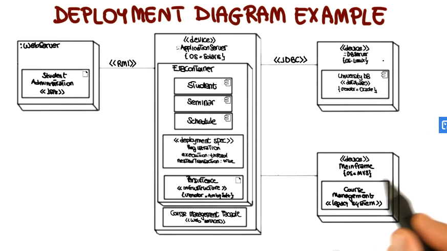
Behavioral Diagram
- Use Case Diagram
- represents 2 things
- sequence of interactions of outside entities (actors) with the system
- system actions that yield an observable result of value to the actors
- describes the outside view of the system
- aka scenarios, scripts, or user stories
- notation 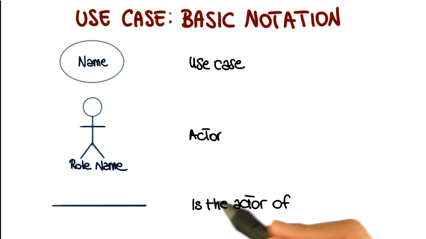
- represents 2 things
- Use Case: Actor
- entity: human or device
- plays a role
- an entity can play more than role
- more than one entity can play the same role
- may appear in more than one use case
- the behavior of a use case can be specified by describing its flow of events (formal or informal)
- how the use case starts and ends
- normal flow of events
- possible alternative flow of events
- exceptional flow of events
- Role of use cases
- requirements elicitation
- architectural analysis
- user prioritization
- planning
- testing
- creation tips
- use a name that communicates purpose
- define one atomic behavior per use case
- define flow of events clearly
- provide only essential details
- factor common behaviors and variants (see additional UML documentation for details on how to do this)
- Sequence Diagram
- interaction diagram that emphasizes the time ordering of messages
- place objects that initiate interaction on the left, and place increasingly more subordinate objects to the right. this should reflec the way that events will typically flow.
- add object lifeline with vertical lines from each object
- add messages to these lifelines in order from top to bottom, linked from sending object on left to receiving object on right
- add focus of control. tall thin bar showing where each object is active during its lifetime. 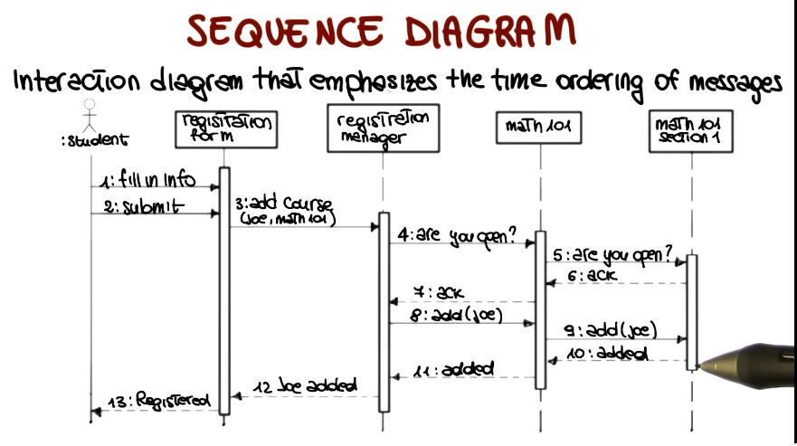
- State Transition Diagram
- For each relevant class - shows life history of that object
- possible states of the class
- events that cause a transition from one state to another
- actions that result from a state change
- course offering example 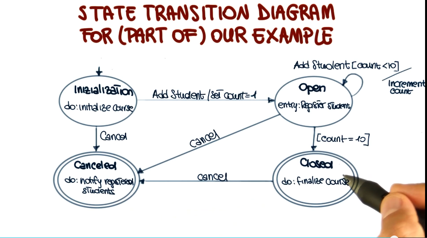
- For each relevant class - shows life history of that object